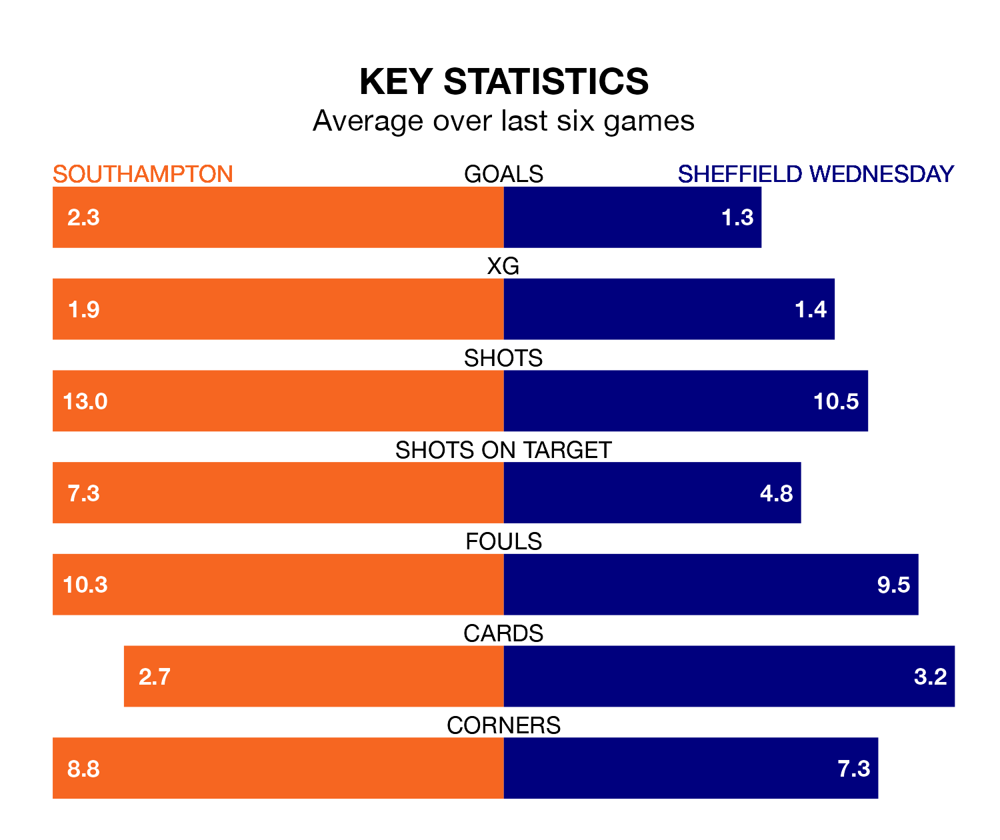

Southampton host Sheffield Wednesday in Saturday's match at St. Mary's looking to bounce back from defeat last time out in the Championship.
The Saints, who sit third in the league after 26 games, fell to a 1-1 away defeat to Norwich City on January 1.
They face a Wednesday side who picked up a win in their last match, a 3-1 victory against Hull City, and who sit 22nd in the table.
With 21 goals in 26 games so far this season, Wednesday are the league's joint-second-lowest scorers with 0.8 goals per game. And they are conceding more than average, letting in 40 goals at a rate of 1.5 per game.
Southampton, meanwhile, are above average scorers, with 1.8 goals per game, compared to a league average of 1.4. They have conceded 1.2 goals per game.
In Adam Armstrong, the Saints have one of the league's most on-form strikers so far this season. He has notched 13 goals in 26 appearances, to sit second in the scoring charts.
His goal rate of one every 171 minutes is much quicker than that of Anthony Musaba, the Owls' top scorer with a goal every 359 minutes, and a total of four goals in 23 games.
The hosts are in good form in the Championship, with four wins and two draws from their last six games.
With three wins and three losses over that period, the away side's form is worse – they have taken nine points from 18, compared to Southampton's 14.
Over the last two years, Southampton and Wednesday have played each other twice. Southampton won one of them and they drew the other.
Their last meeting was on August 4, when Southampton won 2-1 away.
Updated: 12:57, 02/01/24